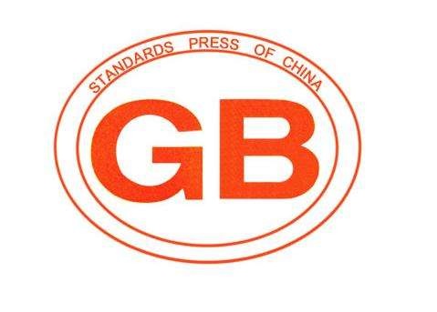

常用国家标准、行业标准、地方标准网址大全
《中华人民共和国标准化法》（2017年11月04日发布，2018年01月01日实施）第十七条：强制性标准文本应当免费向社会公开。国家推动免费向社会公开推荐性标准文本。
现整理面向社会公开的国家标准、行业标准、地方标准网址，方便大家查询。其中大多数标准可免费下载，部分标准仅支持在线浏览。

国家标准
- 全国标准信息公共服务平台（国家标准全文公开系统）
- 中国政府网
本系统收录现行有效强制性国家标准1,992项。其中非采标1,352项可在线阅读和下载，采标640项只可在线阅读；现行有效推荐性国家标准34,844项。其中非采标22,113项可在线阅读，采标12,731项只提供标准题录信息。食品安全、环境保护、工程建设方面的国家标准未纳入本系统，请访问以下链接进行查询: [食品安全] [环境保护] [工程建设]。
提供所有国家标准、行业标准及地方标准的查询，国家标准的在线阅读及部分下载，行业及地方标准部分能提供在线阅读。
行业标准
- 国家工程建设标准化信息网
- 中华人民共和国住房和城乡建设部
- 中华人民共和国生态环境部
- 中华人民共和国国家卫生健康委员会
- 国家食品药品监督管理总局
- 国家食品安全风险评估中心
- 中国电力企业联合会
- 中华人民共和国商务部
- 水利部国际合作与科技司
- 国家广播电视总局
- 国家粮食和物资储备局
- 中国气象标准化网
- 全国金融标准化技术委员会
- 中国民航标准计量网
- 国家林业和草原局
- 国家自然资源部
- 国家体育总局体育器材装备中心
- 中华人民共和国农业农村部
- 中国交通运输标准服务平台
- 中华人民共和国工业和信息化部
- 国家铁路局
- 中华人民共和国人力资源和社会保障部
- 中华人民共和国公安部
工程建设的国家标准（特别是强制性标准）及工程建设行业标准。
提供国家、行业标准发布公告，随公告提供部分标准全文的免费阅读及下载。
提供1000多项生态环保国家标准、行业标准的全文免费阅读及下载，附带地方标准备案。
国家卫生健康委员会，卫生标准网提供2199条卫生标准，可免费下载。
http://www.nhc.gov.cn/wjw/wsbzxx/wsbz.shtml
http://wsbz.nhfpc.gov.cn/wsbzw/
国家食品药品监督管理总局标准查询平台提供食品安全国家标准、药包材标准、医疗器械强制性行业标准、食品药品监管信息化标准、国际食品法典标准、香港食品标准等下载服务。
国家食品安全风险评估中心食品安全国家标准数据检索平台提供1253项食品安全国家标准的下载服务。
提供电力企业联合会的企业标准标准在线阅读及下载。
商务部流通标准制修订信息管理系统，96项商业行业标准可下载（页面右侧）。
水利部水利技术标准查询系统，提供98项含强制性条文的标准文本免费阅读及768项标准题录信息的免费查询。
广电总局标准信息查询系统，公开237项广播电视标准，工程建设标准可下载，其他标准提供主要内容和适用范围等信息。
粮食和物资储备局公开粮油标准目录。
标准涵盖气象国家标准、行业标准、地方标准、团体标准、国外气象标准等，可在线阅读。
中国人民银行金融标准全文公开系统，61项推荐性国标标准，248项推荐性金融行业标准可查询、浏览。
民航局，中国民航标准计量网，657项民航行业标准免费下载。
国家林业标准化管理信息系统，公开林业行业标准1510项。
国土资源标准化信息服务平台、测绘地理信息标准化服务平台、海洋标准化信息系统，免费向社会公众提供现行有效的自然资源推荐性标准题录信息和全文在线阅读服务，目前是三个网址，后期三个网址应该会整合成一个。
国土：http://www.lrs.org.cn/channels/198.html
海洋：http://www.ncosm.org.cn/ncosm/
体育标准化信息平台提供73项体育领域的国标和行标查询服务，其中国标可在线浏览，行标只有摘要信息。
农业农村部：农产品质量安全监管局“农业标准”板块随公告公开农业行业标准和国家标准目录，没有标准全文和下载服务。
交通运输标准化信息平台，提供1155条交通运输行业标准免费阅读服务。
工业和信息化部标准库，提供化工行业、石化行业、黑色冶金行业、有色行业、建材行业、机械行业、船舶行业、轻工行业、纺织行业、兵器行业、核工业行业、电子行业、通信行业 、化工行业、船舶行业、民爆行业、轻工行业、化工行业、石化行业、有色行业、黑色冶金行业、建材行业、稀土行业、机械行业、汽车行业、船舶行业、轻工行业、食品行业、纺织行业、包装行业、电子行业 、电子行业、机械行业标准共33个项目标准。
国家铁路局提供铁路技术标准、工程建设标准、工程造价标准目录，没有在线浏览和下载服务。
人力资源和社会保障部政务公开板块规划统计栏目下设有“标准化建设”，提供公共就业服务标准、社会保险标准、劳动定额定员标准的目录清单，部分行业标准可在线阅读，国家标准链接到了标准委全文公开平台。
公安部，政务公开板块——机构分类——科信局中公共安全行业标准公告中提供公安行业标准目录，没有在线浏览和下载服务。
地方标准
除了国家标准、行业标准外，3万余项地方标准也正陆续公开（具体数目在不断变化）。截至目前面向社会公开地方标准的部分网址，方便大家查询。- 北京市地方标准
- 天津市地方标准
- 河北省地方标准
- 山西省地方标准
- 内蒙古自治区地方标准
- 辽宁省地方标准
- 吉林省地方标准
- 黑龙江省地方标准
- 上海市地方标准
- 江苏省地方标准
- 浙江省地方标准
- 安徽省地方标准
- 福建省地方标准
- 江西省地方标准
- 山东省地方标准
- 河南省地方标准
- 湖北省地方标准
- 湖南地方标准
- 广东省地方标准
- 广西壮族自治区地方标准
- 海南省地方标准
- 重庆市地方标准
- 四川省地方标准
- 贵州地方标准
- 云南省地方标准
- 西藏自治区地方标准
- 陕西省地方标准
- 甘肃省地方标准
- 青海省地方标准
- 宁夏回族自治区地方标准
- 新疆维吾尔自治区地方标准
1657项，可在线查看文本。
810项，可免费下载。
提高标准的查询，大部分强制性地方标准可下载，推荐性地方标准只有目录信息。有京津冀标准专栏。
1217项地方标准，可下载。
500余项，可以在线阅读，访问时间限制工作日9:00~17:00。
1438项，只有目录，没有在线浏览和下载服务。
1433项标准，可下载文本。
部分标准提供了文本、可下载。
776项，可免费下载全文。
2271项，可在线浏览和免费下载。
802项，可在线浏览和免费下载。
2523项，可在线浏览和下载。
1912项，需要登录才能阅览。
721项，可在线阅读和下载。
3221项，可在线阅读。
1591项标准，可下载、可预览。
1724项，可在线浏览。
1909项，可在线浏览。
1724项，可在线查看文本（IE浏览器）。
1749项，只有目录、不能阅读和下载。
474项，可直接下载。
905项，部分标准可在线浏览。
1981项，可在线浏览。
1516项（现行有效1053项），可在线阅读和下载。
943项，可在线阅读。
115项，可阅览，可直接下载。
1032项，可在线浏览和下载。
暂时访问出错。
1613项，只有目录，不能阅读和下载。
1395项，可以阅读载。
暂时访问出错。